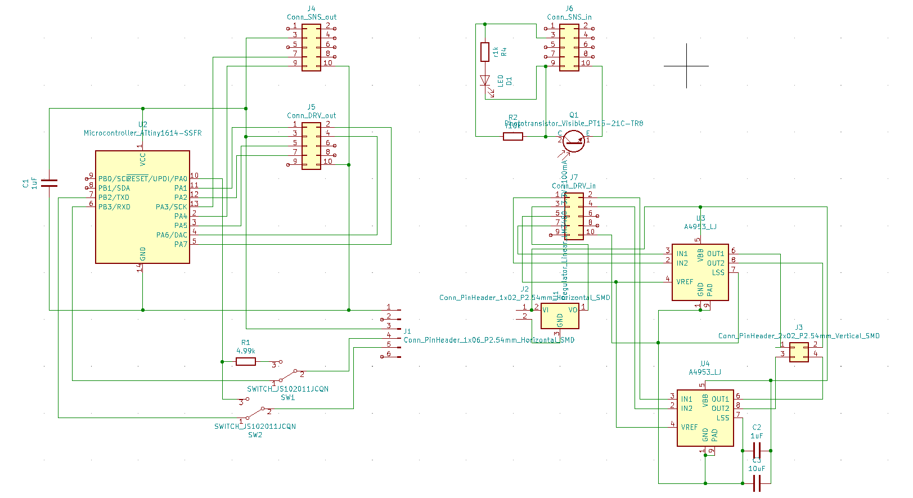
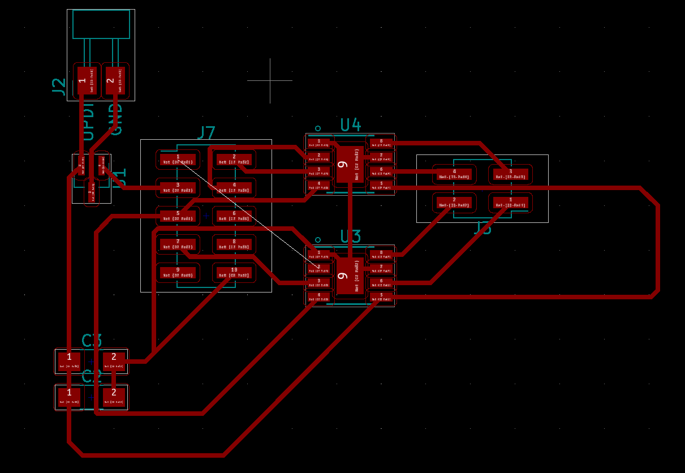

This week, I decided to start simple with DC motors that operate at the same voltage as my microcontroller in order to create a small baseline prototype for my final project
I plugged DC motors to the power source and checked their behaviour in terms of speed, torque, noise and vibrations.
Since creating the prototype for molding & casting week, I want to create a small working prototype before going for anything bigger. The DC and stepper motors in the shop were too big for this purpose.
What I found to be a possible solution are very small vibro motors that can operate on as little as 1.5 volts, and are tiny.
My base plan is to switch the unbalanced weights (that make the motor vibrate) with wheels. However, upon testing the motors, I fell in love with their angry bee behaviour. I could utilize vibration both as a simple means of locomotion, and expression (my final project should express fear).
Another idea for this week is to experiment with using a PCB as the chassis for a small rover. This approach may be especially efficient for building quick prototypes of fabricating multiple rovers.
I glued two vibromotors to an old PCB test and soldered their GND and VCC cables to traces on the board for easier connection.
I jumper wired an analog pin from my first iteration phototransistor board to the motors and modified the code to output to motors instead of an LED.
Thanks to a very humble setup, I achieved the first working prototype for my final project. The vibromotors operate under low light.
I also tested they prototype with 3.7 volt LiPo batteries, with satisfactory results.
After completing the initial protoype, I wanted to get my hands dirty with heavier, more accurate stepper motors, and motor controllers.
Designs for stepper motor PCB turned out to be more complex than I like (Kudos to Kim for teamwork). As a solution, we decided to design separate boards for microcontroller, sensors, and motor controllers that would communicate with 2x5 connectors.
My initial design with 2x5 connectors ended up in even a greater mess of connections. However, by using a smarter layout among pins and connectors, I think it will be easier to implement this approach.


Working through another couple of hours with Kim, I updated the design to accomodate the spatial layout of connectors with regards to the microcontroller. Resulting in a working PCB design that only requires a single 0 ohm resistor for routing.